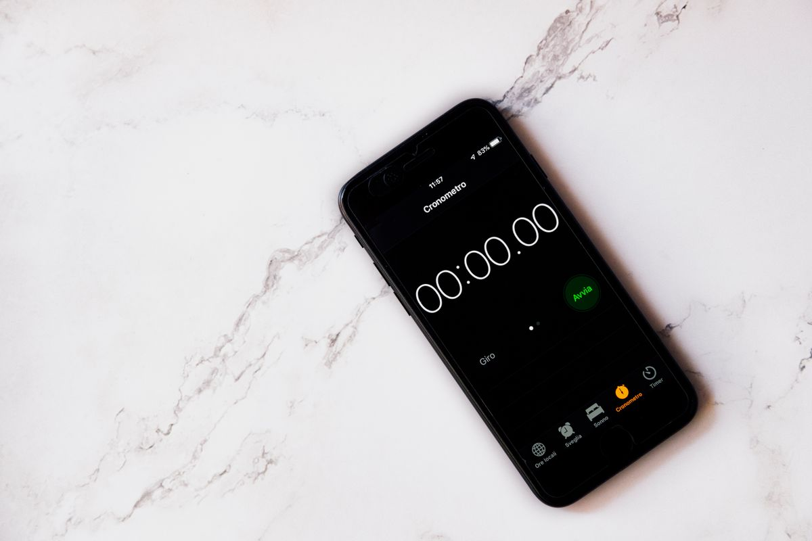

DEMO 01
Being an Activity
Press Home, Back, a dialog and a rotation. The Logcat fills with the real callbacks, and a running clock shows what each one costs you.
Hour 1 · the lifecycleOpen →

DEMO 02
Save and Restore the Stopwatch
Rotate with the fix off and the clock dies. Switch it on and the same rotation keeps the value — with the real Bundle contents on screen.
Hour 1 · the fixOpen →
DEMO 03
Views and ViewGroups
Click any node of the real layout tree. See what class it is, what it inherits — and which nodes are allowed to contain children.
Hour 2 · the view treeOpen →

DEMO 04
Gravity and layout_gravity
The same click on both attributes, side by side. Watch which one moves the text and which one moves the box — plus stacking with a FrameLayout.
Hour 2 · layoutOpen →
Using these in class
- Each demo is a single self-contained page — open it directly, or press 1–4 from this index. 0 comes back here.
- Nothing here needs the network. The whole folder works offline, projector network or not.
- Demo 01 and Demo 02 are a pair. Do not explain the rotation away in the first one — let them watch the clock reset, then move to the second and fix it. Two minutes of “why did that happen?” is worth more than the slide.
- Demo 03 and Demo 04 are the second half of the lecture. Both are reference tools: leave the tab open while you talk, and click through it rather than describing it.